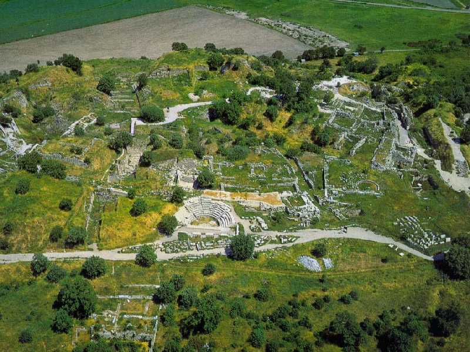
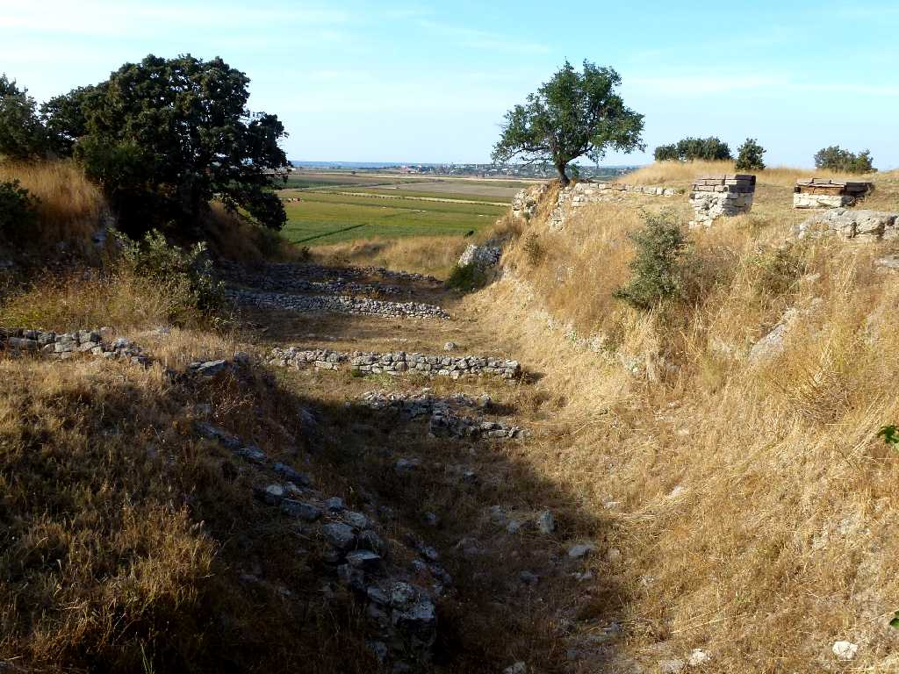
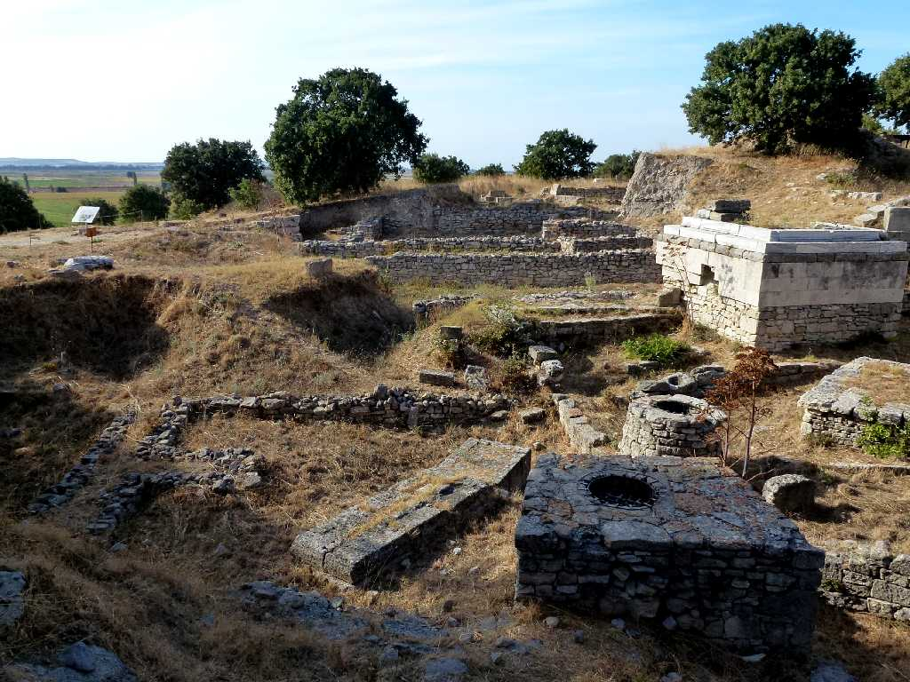
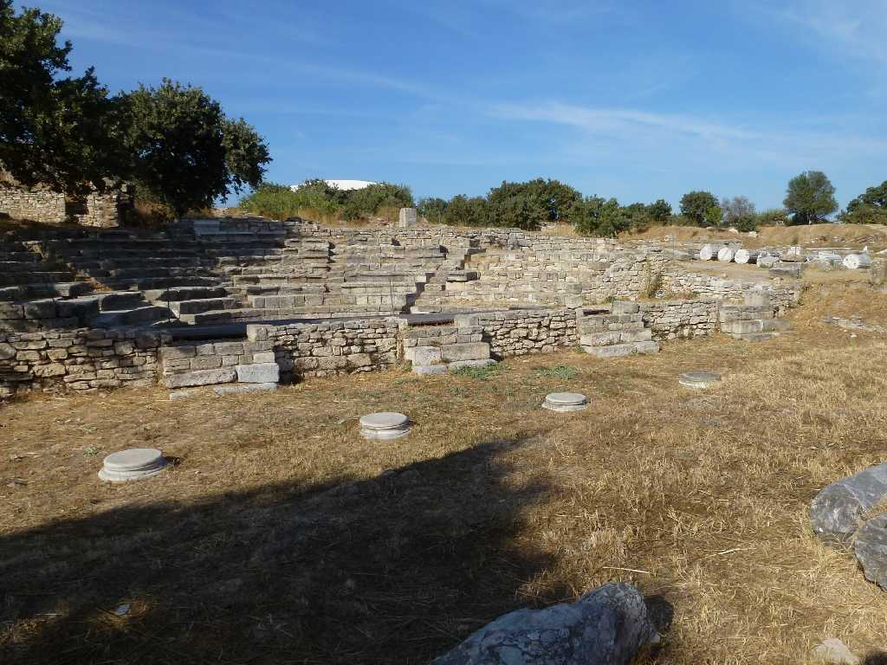
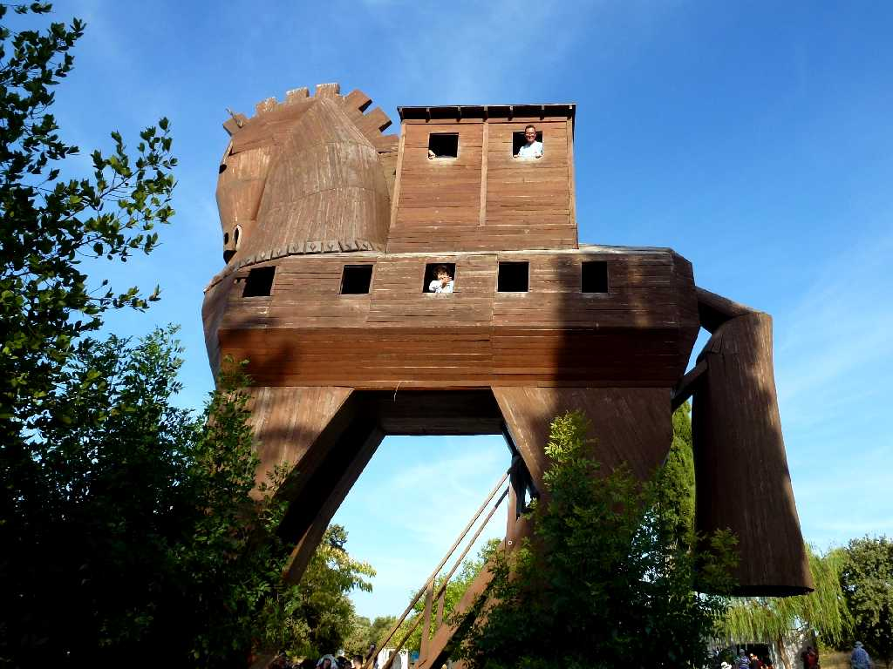

Troy
ギリシャの詩人ホメロスの叙事詩に出て来るトロイの木馬やドイツ人考古学者シュリーマンの発掘などで有名 Ｂ.Ｃ.3000年からＡ.Ｄ.500年頃までの９つの時代の遺跡が１つの丘に積み重なっているので現地で見ると解り難い

Troy
第Ⅱ市紀元前２５００年～２３００年エーゲ海交易で栄えた時代の石積と考えられ遠くにエーゲ海を望む シュリーマンが手にした財宝はこの時代のものでトロイの木馬のトロイア戦争の時代は第Ⅶ市紀元前１２００年頃で時代が違う ３０年前は原野に遺跡らしき石があったが発掘が進み整備されている

Troy
第Ⅷ市紀元前７００年～５００年頃の居住区と考えられている

Troy
第Ⅸ市紀元前５００年～紀元５００年頃の小劇場と考えられている

September 24 2011 The wooden horse Troy
ヴァチカン美術館にあるトロイの神官ラオコーン Laokoon の彫像とギリシャ神話を思い出しながら木馬の中まで入って見た